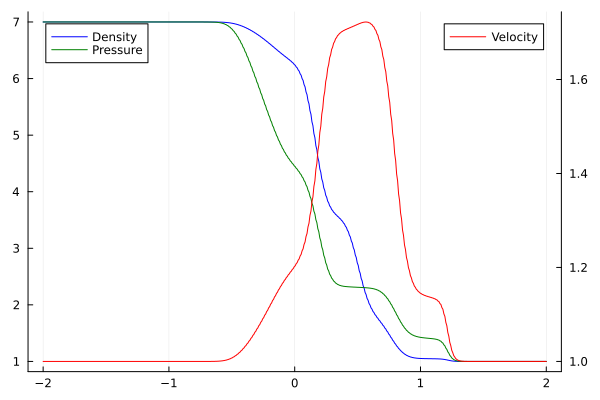
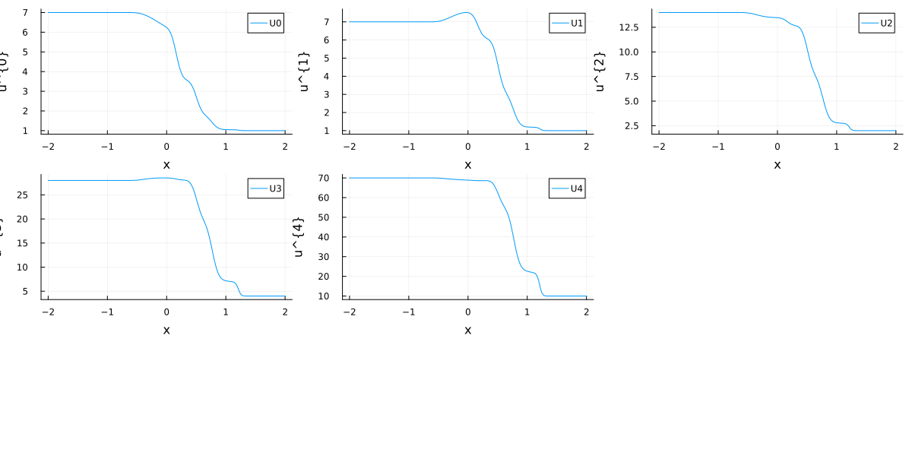

Shock Tube Example
This tutorial mirrors the setup from examples/main.jl with parameters tuned for a fast documentation build. It evolves a one-dimensional shock tube and stores the resulting density/velocity/pressure profile.
if !endswith(Base.active_project(), "../Project.toml")
import Pkg; Pkg.activate(".")
end # Runs in environment setup
using HyQMOM, Trixi, OrdinaryDiffEq, Plots, CSV, TablesSetup
Start with the number of moments, closure, and the Knudsen number
M = 4
closure = "ExtGram"
Kn = 1.0continue with the numerical setting
T_end = 0.3
x_lower, x_upper = -2.0, 2.0
polydeg = 1
base_tree_level = 8
surface_flux = flux_lax_friedrichs
volume_flux = flux_centraland the initial conditions
ρ_L = 7.0
v_L = 1.0
θ_L = 1.0
ρ_R = 1.0
v_R = 1.0
θ_R = 1.0
# Setting up everything
equations = GramianMomentEquations1D(M, Kn, closure)
initial_condition = InitialConditionsShockTube(
Maxwellian(ρ_L, v_L, θ_L), # Density, velocity, temperature
Maxwellian(ρ_R, v_R, θ_R), # Shock in density, but not velocity, temperature initially
equations
)Set up the numerical solver
The solver
basis = LobattoLegendreBasis(polydeg)
# shock capturing
indicator_sc = IndicatorHennemannGassner(
equations, basis,
alpha_max = 0.5,
alpha_min = 0.001,
alpha_smooth = true,
variable = (u, eqns)->u[1]*u[3]
)
volume_integral = VolumeIntegralShockCapturingHG(
indicator_sc;
volume_flux_dg = volume_flux,
volume_flux_fv = surface_flux
)
solver = DGSEM(basis, surface_flux, volume_integral)
````
and the semidiscretization
julia mesh = TreeMesh( (domain[1],), (domain[2],), initialrefinementlevel=basetreelevel, ncellsmax=10_000, periodicity=false )
boundaryconditions = (xneg = BoundaryConditionDirichlet(initialcondition), xpos = BoundaryConditionDirichlet(initial_condition))
semi = SemidiscretizationHyperbolic( mesh, equations, initialcondition, solver, boundaryconditions=boundaryconditions, sourceterms=source ) ````
with the ode problem
tspan = (0.0, T_end)
ode = semidiscretize(semi, tspan)and the callbacks
callbacks, summary_callback = callbacksGramianMomentEquations(
semi, tspan, basis;
cfl = 0.9, # Maximum cfl number
plot_interval = 20, # plot every 20 steps
name="gram_solution",
)Solve the problem
sol = solve(
ode,
CarpenterKennedy2N54(
williamson_condition = false
);
dt = 1.0, # solve needs some value here but it will be overwritten by the stepsize_callback
ode_default_options()...,
callback = callbacks,
saveat = range(tspan[1], tspan[2], length=100)
);Post Processing
Visualize the density, velocity, and pressure
x, ρ, v, p, p1 = plot_ρ_v_p(sol, M, x_lower, x_upper)
display(p1)
or visualize all the (conservative) moments separately
u_final = sol.u[end]
L = length(u_final)
Nloc = L ÷ (M + 1)
Fmat = reshape(u_final, M+1, Nloc)
u = []
for i in 1:(M+1)
push!(u, Fmat[i, :])
end
# Plot first moments
pl = Vector{Any}(undef, M+1)
x = range(x_lower, x_upper, length=Nloc)
for i in 1:(M+1)
pl[i] = scatter()
plot!(
pl[i],
xlabel="x",
ylabel="u^{$(i-1)}",
)
plot!(
pl[i],
x, u[i],
label="U$(i-1)",
)
end
display(pl)
l = @layout [grid(3,3)]
plot(pl..., layout=l, size=(1_200, 600))